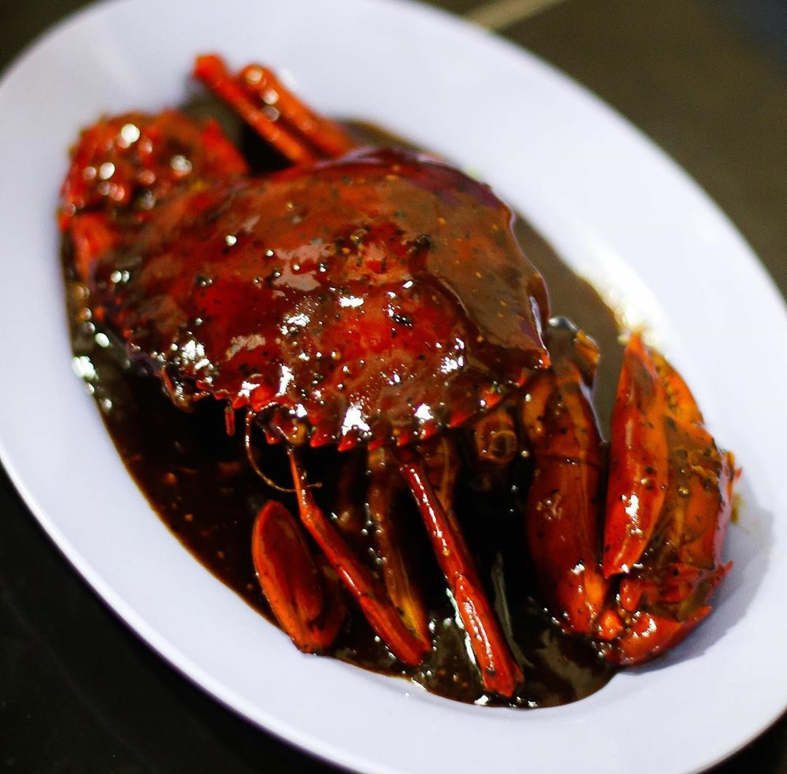

15
Jan
Kepiting saus tiram
Kepiting memang salah satu jenis binatang laut yang menggiurkan untuk dimasak. Kepiting bisa dibilang merupakan primadona olahan seafood.
Disini kami mempublikasikan resep seafood terbaik yang kami punya
Termasuk cara mengolah dan mengihadangkan!

Jan
Kepiting memang salah satu jenis binatang laut yang menggiurkan untuk dimasak. Kepiting bisa dibilang merupakan primadona olahan seafood.